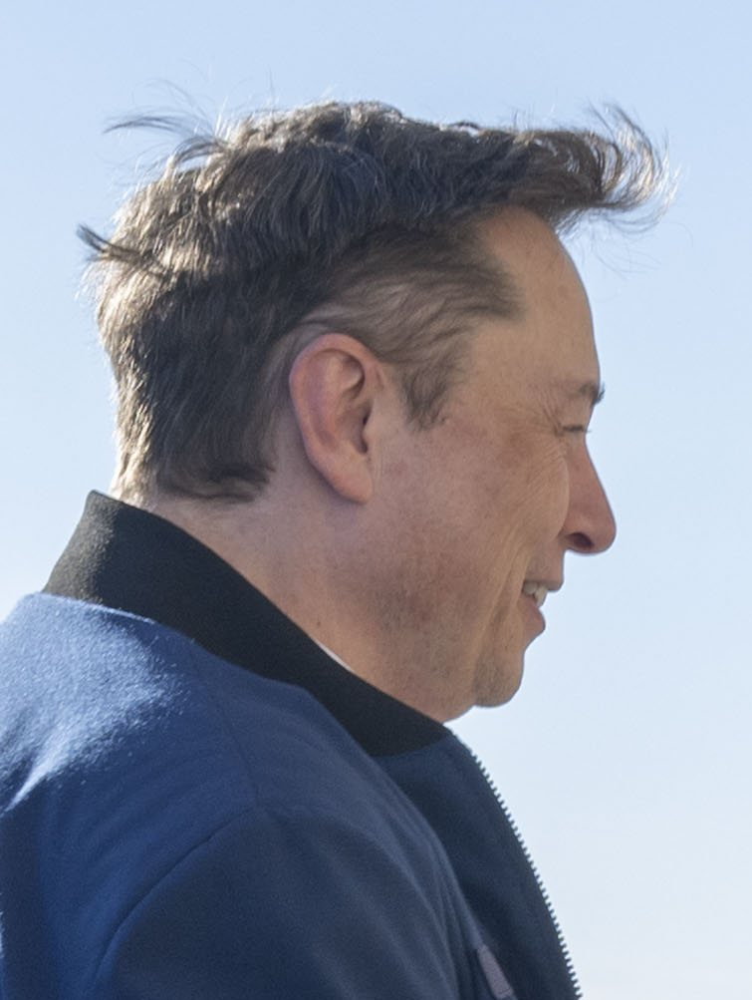
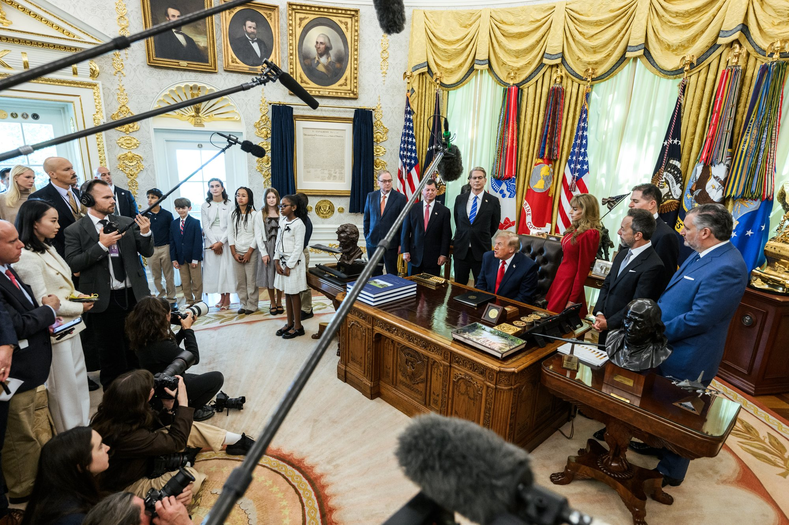
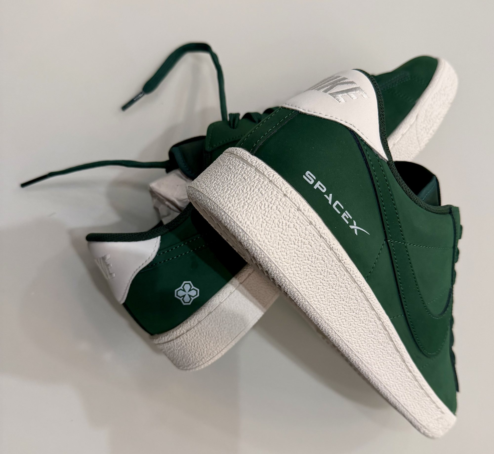

Lunedì 19 ottobre, alle 9:52 ora italiana, Elon Musk ha scritto su X due righe che in un giorno hanno superato i 29 milioni di visualizzazioni: «Next year, I will give one of my SpaceX shares to every kid in America. This will be the first of many». Cioè: l’anno prossimo darò una delle mie azioni SpaceX a ogni bambino d’America, e sarà la prima di molte. Per valore è una delle promesse di donazione più grandi mai annunciate, arriva il giorno prima dei conti del terzo trimestre e per ora non ha né un calendario né un meccanismo.
Da una risposta ad Anthropic alla promessa
La storia comincia la sera prima, domenica 18 ottobre. Anthropic, l’azienda di intelligenza artificiale che produce Claude e che è fra i concorrenti diretti di Grok, il modello di SpaceXAI, annuncia su X l’Anthropic Public Benefit Fund: una nuova società interamente controllata, dedicata solo al bene pubblico. Partirà con il 5 per cento delle azioni di Anthropic, e il consiglio potrà aggiungere un altro 2 per cento per ogni aumento del 50 per cento del valore dell’azienda sopra una soglia non ancora resa nota. Il fondo, che deve essere approvato dagli azionisti, potrà fare grandi donazioni, distribuire risorse a gruppi specifici di persone o finanziare progetti per affrontare la perdita di posti di lavoro causata dall’intelligenza artificiale.
Alle 22:16 ora italiana Musk risponde: «I recommend giving the shares directly to the public», consiglio di dare le azioni direttamente al pubblico. La mattina dopo arriva il post sui bambini, che Musk fissa in cima al suo profilo. Nel pomeriggio, rispondendo a un commentatore finanziario, ripete il concetto: dare direttamente alle persone le azioni, «che sono quote dell’economia futura», è la strada giusta. Il confronto con Anthropic è evidente: da una parte un fondo gestito dall’azienda, dall’altra titoli consegnati, almeno nelle intenzioni, a ogni singolo bambino.

Quanto vale, e quanto pesa per Musk
SpaceX è quotata al Nasdaq da giugno 2026 con il simbolo SPCX. Il prezzo di collocamento era di 135 dollari; il titolo è salito fino a 225,64 dollari, è sceso vicino ai 105 all’inizio di agosto e venerdì 16 ottobre ha chiuso a 146,03 dollari. Al 1° luglio 2025 i minori di 18 anni negli Stati Uniti erano circa 72 milioni: una azione a testa significa quindi circa 72 milioni di titoli, poco più di 10,5 miliardi di dollari a quel prezzo. Il valore reale dipenderà da quando e a che quotazione avverrà la consegna.
Per Musk è una frazione piccola del suo pacchetto. I documenti depositati ad agosto presso la SEC, l’autorità americana di controllo della Borsa, gli attribuiscono circa 4,8 miliardi di azioni, che diventano 6,4 miliardi contando premi e opzioni non ancora maturati: in tutto il 48,4 per cento di SpaceX. Settantadue milioni di titoli sono circa l’1,5 per cento di quanto possiede oggi. Gran parte del suo pacchetto è però di classe B, con dieci voti per azione; le azioni di classe A, con un voto, sono circa 849 milioni e sono detenute dai suoi trust. Il prospetto della quotazione prevede che una azione di classe B si converta in classe A in quasi ogni trasferimento, regali compresi: ai bambini arriverebbero quindi titoli con un solo voto, e il controllo di Musk sull’azienda non cambierebbe in modo apprezzabile.

I Trump Accounts, il canale che esiste già
Musk non ha detto come farà. Lo ha detto, a modo suo, Donald Trump: alle 23:24 ora italiana di lunedì il presidente ha ringraziato «il nostro leggendario amico» per la generosità di dare azioni SpaceX a milioni di bambini americani «attraverso i TRUMP ACCOUNTS», aggiungendo che è esattamente ciò che si immaginava quando i conti sono stati creati. Anche Brad Gerstner, fondatore del fondo Altimeter Capital e promotore dell’iniziativa Invest America da cui i conti sono nati, ha parlato su X di «più grande donazione filantropica della storia» e ha indicato quei conti come la via naturale.
I Trump Accounts sono conti di investimento per i minori di 18 anni con un numero di previdenza sociale, introdotti dalla legge fiscale del luglio 2025 come una forma particolare di conto pensionistico individuale. Dal 1° ottobre 2026 il Tesoro ne ha aperto uno automaticamente per ogni bambino che ne aveva diritto: la Casa Bianca parla di quasi 70 milioni di conti. Per legge possono contenere soltanto fondi comuni o fondi quotati che seguono un ampio indice di aziende in prevalenza americane, con costi annui non superiori allo 0,1 per cento.
Le regole temporanee pubblicate dal Tesoro il 30 settembre prevedono però un’eccezione per le azioni, ed è quella che interessa qui. A donare deve essere un ente pubblico o un’organizzazione benefica: Musk dovrebbe quindi passare prima le azioni a una charity, che poi le distribuirebbe. Ogni bambino del gruppo scelto deve ricevere la stessa quantità. Serve l’approvazione del Tesoro, concessa a discrezione del segretario, che per i titoli valuta anche i costi di trasferimento e di gestione. Le azioni ricevute in genere non si possono vendere per cinque anni, o fino alla fine dell’anno in cui il ragazzo compie 17 anni se arriva prima. Infine i conti aperti d’ufficio confluiscono in un unico trust che investe per tutti, e chi lo amministra non ha margine di scelta sul voto: il bambino possiederebbe una piccola parte di SpaceX senza esprimere nessun voto, e l’azienda si troverebbe davanti un grande azionista invece di decine di milioni di piccoli.

Il nodo delle azioni vincolate
C’è un ostacolo tecnico che riguarda proprio le azioni di Musk. Le regole del Tesoro ammettono nei Trump Accounts solo titoli quotati che non siano «restricted securities» secondo la Rule 144 della SEC, cioè azioni ottenute da un’azienda fuori da un’offerta pubblica. Il prospetto della quotazione di SpaceX, datato 11 giugno 2026, stabilisce che tutte le azioni esistenti prima del collocamento, comprese quelle di Musk, sono considerate vincolate in questo senso. Possono diventare liberamente vendibili solo quando vengono registrate o rientrano in un’esenzione prevista dalle regole sulla rivendita.
A questo si aggiunge l’accordo di blocco firmato con le banche della quotazione, il lock-up, che impedisce a Musk di vendere o trasferire le sue azioni fino al 366° giorno dopo il prospetto, cioè circa a metà giugno 2027. Prima di quella data il prospetto permette regali solo se chi li riceve accetta a sua volta il vincolo. Il «prossimo anno» indicato da Musk lascia quindi spazio a una consegna dopo la scadenza del blocco, ma la strada passa comunque dai suoi avvocati e dal Tesoro.
L’alternativa è saltare i Trump Accounts e regalare le azioni direttamente. Una sola azione è molto sotto la soglia annuale di 19.000 dollari esente dall’imposta sulle donazioni, e il bambino erediterebbe il costo fiscale di Musk, non il prezzo di mercato del giorno del regalo. Ma servirebbe un conto per ciascuno: per i minori si usano conti di custodia previsti dalle leggi dei singoli Stati, in cui il ragazzo è proprietario dal giorno del regalo e un adulto gestisce i titoli fino alla maggiore età. Aprirne e collegarne decine di milioni sarebbe un’operazione senza precedenti.
Shotwell aveva aperto la strada
L’idea di portare azioni SpaceX nei conti dei bambini non è nuova dentro l’azienda. Il 6 luglio la presidente di SpaceX, Gwynne Shotwell, aveva annunciato su X che lei e il marito avrebbero dato una loro azione SpaceX al Trump Account di ciascuno di oltre due milioni di ragazzi fra gli 11 e i 17 anni delle zone a basso reddito. Quell’annuncio è arrivato prima che il Tesoro fissasse le regole che oggi impongono il passaggio da una charity e l’approvazione federale: anche il suo regalo dovrà adattarsi allo stesso percorso.
Va ricordato anche che le promesse di donazione di Musk non sempre sono andate in porto. A OpenAI, che aveva contribuito a fondare come laboratorio senza scopo di lucro, aveva promesso fino a un miliardo di dollari, ma fra il 2016 e il 2020 ne ha versati circa 38 milioni. Nel 2021 aveva detto che avrebbe dato 6 miliardi al Programma alimentare mondiale dell’ONU se gli avessero mostrato un piano per risolvere la fame nel mondo: il piano è stato pubblicato, la donazione non è arrivata.
Perché conta per SpaceX
Il tempismo non è casuale. Oggi, martedì 20 ottobre, dopo la chiusura della Borsa SpaceX presenta i risultati del terzo trimestre, con la diretta su X alle 22:30 ora italiana. Il titolo resta circa il 28 per cento sotto il massimo di giugno e il mercato guarda soprattutto alla spesa per l’intelligenza artificiale, alla crescita di Starlink e all’ipotesi, discussa dagli analisti, di una fusione con Tesla. Una promessa che trasforma decine di milioni di famiglie americane in azionisti, anche solo con un titolo a testa, allarga il pubblico che segue SpaceX e lega ancora di più l’azienda al progetto dei conti per i minori voluto dalla Casa Bianca.
Per i bambini, intanto, non cambia nulla: nessun conto riceverà azioni prima del 2027 e nessuno deve fare domanda. Le cose da seguire sono tre: se Musk o SpaceX diranno quale canale useranno, se il Tesoro riceverà una richiesta di approvazione e se, nella call di stasera, qualcuno chiederà a Musk di spiegare la sua promessa.
Il dossier su Bandwagon-5 e Starfall passa all’archivio Notizie: in primo piano, oggi, c’è la promessa di Musk ai bambini americani.
Fonti pubbliche e tracce
Ultimo aggiornamento editoriale: 20 ottobre 2026, ore 9:40 (ora italiana). Nel corpo non si ripete la fonte a ogni frase: le tracce sono raccolte qui. Gli orari dei post sono convertiti in ora italiana. Non è consulenza finanziaria.
- Elon Musk su X, 19 ottobre 2026, ore 9:52 italiane: «Next year, I will give one of my SpaceX shares to every kid in America. This will be the first of many.»
- Elon Musk su X, 18 ottobre 2026, ore 22:16 italiane: risposta ad Anthropic, «I recommend giving the shares directly to the public».
- Anthropic su X, 18 ottobre 2026: annuncio dell’Anthropic Public Benefit Fund, 5% delle azioni più il 2% per ogni aumento del 50% del valore.
- Elon Musk su X, 19 ottobre 2026, ore 17:58 italiane: le azioni come «stakes in the future economy» da dare direttamente alle persone.
- Donald J. Trump su X, 19 ottobre 2026, ore 23:24 italiane: ringraziamento a Musk e riferimento ai Trump Accounts.
- CNBC, Kai Nicol-Schwarz e Lora Kolodny, 19 ottobre 2026: 72 milioni di minori, valore di circa 10,5 miliardi a 146,03 dollari, 4,8 e 6,4 miliardi di azioni di Musk (48,4%), commento di Brad Gerstner, precedenti con OpenAI e Programma alimentare mondiale, dettagli sul fondo Anthropic.
- AP News, Michelle Chapman, 19 ottobre 2026: la promessa di Musk il giorno dopo l’annuncio di Anthropic.
- Bitterfool, Aaron Harme, 19 ottobre 2026: analisi delle regole del Tesoro, Rule 144, classi di azioni, lock-up fino a metà giugno 2027, alternativa dei conti di custodia, annuncio di Gwynne Shotwell del 6 luglio.
- Federal Register, regole temporanee sui Trump Accounts, 30 settembre 2026: requisiti dei conti, donazioni di titoli da enti pubblici e charity, approvazione del Tesoro.
- SEC, dichiarazione dello staff sui Trump Accounts: apertura automatica dei conti dal 1° ottobre 2026 e trust comune che li gestisce.
- Teslarati, Joey Klender, 19 ottobre 2026: circa 849 milioni di azioni di classe A di Musk.
- Teslarati, 18 ottobre 2026: conti del terzo trimestre dopo la chiusura del 20 ottobre con diretta alle 16:30 ET, prezzo di collocamento a 135 dollari, massimo a 225,64, minimo vicino a 105, ipotesi di fusione con Tesla.
Fotografie utilizzabili
Tutte le immagini sono libere. La copertina e la foto dello Studio Ovale sono foto ufficiali della Casa Bianca dell’annuncio sui Trump Accounts del 7 ottobre 2026, di pubblico dominio; il ritratto di Musk è del Dipartimento della Difesa, di pubblico dominio; le scarpe ricordo della quotazione SpaceX sono di Steve Jurvetson, licenza CC BY 4.0. Dettagli in scheda dei crediti fotografici.
Apri il dossier Bandwagon-5 archiviato · Archivio Notizie · Torna a SpaceX